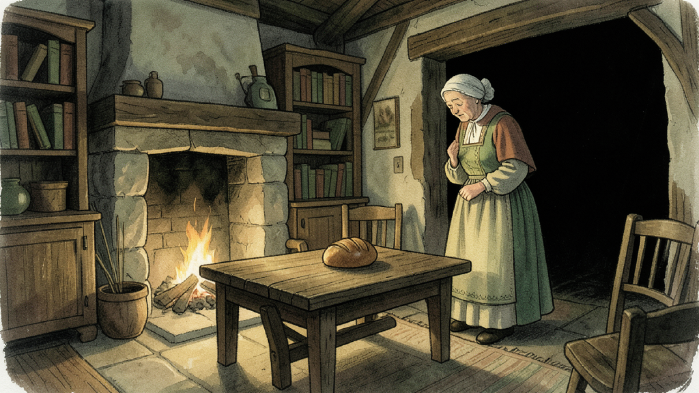

Agreed: side by side (A), a row that carries on to the other side (A), and a mark standing on its thing never moves (A). Applies to any mark moved off the plate, a corner button or the action bar.
Today — the two marks land on each other
Both things are under the plate, and both marks step straight down to the same line just below it. They land 6 px apart and their glows merge into one blob, with two names pointing at it.

You are inElior's CottageVoiceShelvesBooksFaded photographTableHearthBedLanternWindow
Books
Shelves
Table
Hearth
Bed
◎ Showing
LookTalkUseBag⋯
Today. Two names, one blob: a player can't tell which dot is the shelves and which the books, nor press one reliably.
the mark a player seeswhere the thing really is, hidden under the plate (not shown in the game)
Option A — side by side on the line under the plate
Both marks stay on the line just below the plate. The second one slides sideways until there is a full mark's width of clear space between them. The one further left in the picture stays on the left.
You are inElior's CottageVoiceShelvesBooksFaded photographTableHearthBedLanternWindow
Shelves
Books
Table
Hearth
Bed
◎ Showing
LookTalkUseBag⋯
Option A (recommended). Shelves and Books sit side by side just under the plate, a mark's width of space between them; each name goes beside its own mark as usual.
the mark a player seeswhere the thing really is, hidden under the plate (not shown in the game)
Crowded, Option A — the row continues on the other side
Four things lie under the plate near the right edge. Their marks line up side by side just below the plate; when the row reaches the edge of the screen, it carries on to the left of the first mark. Every mark stays on the line just under the plate.
You are inElior's CottageVoiceShelvesBooksFaded photographTableHearthBedLanternWindow
Window
Hook
Rafters
Lantern
◎ Showing
LookTalkUseBag⋯
Option A (recommended). All four marks on one line just under the plate, each a mark's width apart. The names sort themselves out beside them as they do today.
the mark a player seeswhere the thing really is, hidden under the plate (not shown in the game)
A moved mark meets one that wasn't moved — Option A: the moved mark gives way
Books' mark is moved out from under the plate, but just below the plate there is already a mark that sits on its own thing (Lantern hook). The moved mark slides aside; the Lantern hook's mark stays exactly on the lantern hook.
You are inElior's CottageVoiceShelvesBooksFaded photographTableHearthBedLanternWindow
Lantern hook
Books
◎ Showing
LookTalkUseBag⋯
Option A (recommended). A mark that already stands on its thing never moves. Only the moved mark gives way.
the mark a player seeswhere the thing really is, hidden under the plate (not shown in the game)